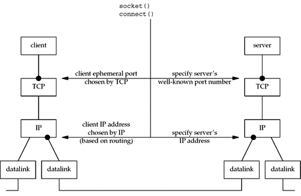
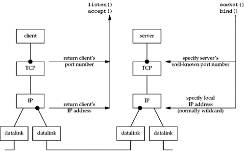

| [ Team LiB ] |
|
5.17 Summary of TCP ExampleBefore any TCP client and server can communicate with each other, each end must specify the socket pair for the connection: the local IP address, local port, foreign IP address, and foreign port. In Figure 5.15, we show these four values as bullets. This figure is from the client's perspective. The foreign IP address and foreign port must be specified by the client in the call to connect. The two local values are normally chosen by the kernel as part of the connect function. The client has the option of specifying either or both of the local values, by calling bind before connect, but this is not common. Figure 5.15. Summary of TCP client/server from client's perspective. As we mentioned in Section 4.10, the client can obtain the two local values chosen by the kernel by calling getsockname after the connection is established. Figure 5.16 shows the same four values, but from the server's perspective. Figure 5.16. Summary of TCP client/server from server's perspective. The local port (the server's well-known port) is specified by bind. Normally, the server also specifies the wildcard IP address in this call. If the server binds the wildcard IP address on a multihomed host, it can determine the local IP address by calling getsockname after the connection is established (Section 4.10). The two foreign values are returned to the server by accept. As we mentioned in Section 4.10, if another program is execed by the server that calls accept, that program can call getpeername to determine the client's IP address and port, if necessary. |
| [ Team LiB ] |
|